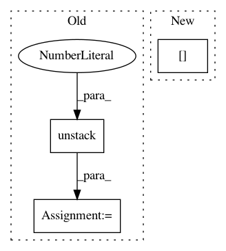

d52eb0bf3d6df25c70933321a841dac157806479,luminoth/models/ssd/ssd_utils.py,,adjust_bboxes,#Any#Any#Any#Any#Any#,5
Before Change
// We normalize bounding boxes points.
bboxes_float = tf.to_float(bboxes)
x_min, y_min, x_max, y_max = tf.unstack(bboxes_float, axis=1)
x_min = x_min / old_width
y_min = y_min / old_height
x_max = x_max / old_width
After Change
// x_min, y_min, x_max, y_max = np.split(bboxes, 4, axis=1)
// import ipdb; ipdb.set_trace()
x_min = bboxes[:, 0] / old_width
y_min = bboxes[:, 1] / old_height
x_max = bboxes[:, 2] / old_width
y_max = bboxes[:, 3] / old_height
In pattern: SUPERPATTERN
Frequency: 5
Non-data size: 3
Instances
Project Name: tryolabs/luminoth
Commit Name: d52eb0bf3d6df25c70933321a841dac157806479
Time: 2018-03-20
Author: joaquin.alori@gmail.com
File Name: luminoth/models/ssd/ssd_utils.py
Class Name:
Method Name: adjust_bboxes
Project Name: reinforceio/tensorforce
Commit Name: b0fd7d13ff1392c60dfef432bfea7a7dd035f71f
Time: 2017-07-29
Author: aok25@cl.cam.ac.uk
File Name: tensorforce/models/dqfd_model.py
Class Name: DQFDModel
Method Name: create_tf_operations
Project Name: NifTK/NiftyNet
Commit Name: 5fb4404583ecffdee8cf98e4ae9e0a91d479f071
Time: 2018-08-07
Author: wenqi.li@ucl.ac.uk
File Name: niftynet/layer/loss_regression.py
Class Name: LossFunction
Method Name: layer_op
Project Name: tensorflow/models
Commit Name: f7b4c6de2037ebedf6bc8ea5979e81666d54534f
Time: 2020-12-01
Author: rathodv@google.com
File Name: research/object_detection/meta_architectures/center_net_meta_arch.py
Class Name:
Method Name: convert_strided_predictions_to_normalized_boxes
Project Name: NifTK/NiftyNet
Commit Name: 5fb4404583ecffdee8cf98e4ae9e0a91d479f071
Time: 2018-08-07
Author: wenqi.li@ucl.ac.uk
File Name: niftynet/layer/loss_segmentation.py
Class Name: LossFunction
Method Name: layer_op